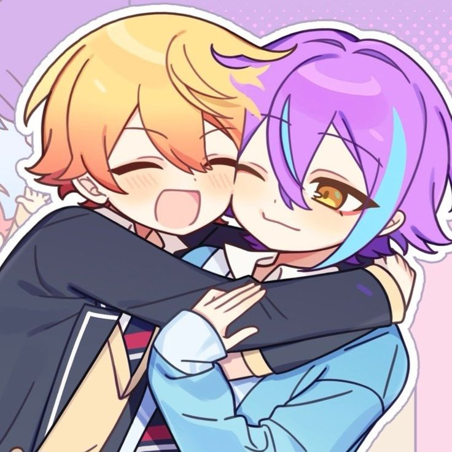
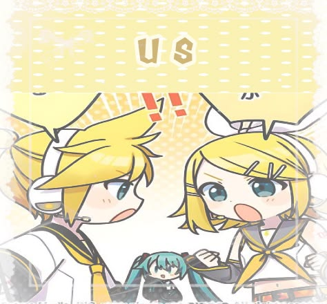
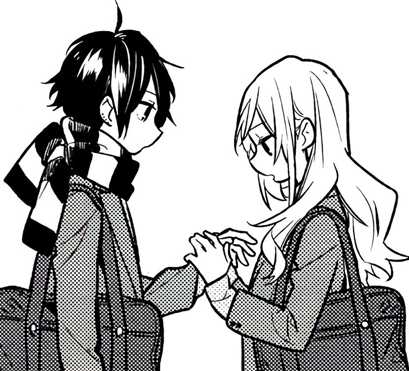
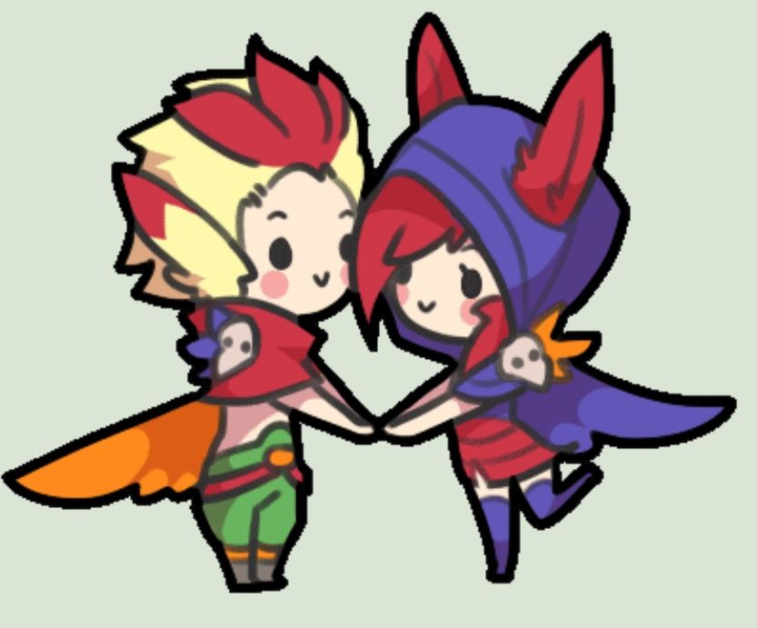

Para la personita que hace mis días mucho más wonitos
Mi carta para ti
Amorcitoooooo hoy me dieron unas ganas enormes de escribirte algo muy wonito simplemente para recordarte lo lindo que se siente tenerte en mi vida y lo mucho que alegras hasta mis peores días. No necesito una fecha marcada en el calendario para decirte que te amo muchote, porque la verdad es que cualquier momento es perfecto para dejar por escrito todo lo bueno que me haces sentir desde que estamos juntos...
Estar contigo me hace inmensamente feliz. Me encanta la tranquilidad que me transmites, me gusta mucho cuando vamos al parquesito o cuando vienes a mi casa y nos reimos por todo jsjksk y la forma tan única que tienes de hacer que todo se sienta más lindo y especial. A veces me detengo a pensar en nosotros y me doy cuenta de la suerte inmensa que tengo de compartir mi tiempo con alguien tan valiosa, dulce y comprensiva como tú... Eres esa personita que solo se puede encontar de una en un millón en toooodo el mundo, saber que eres mi novia me hace sentir muy afortunado y me llena de orgullo. Gracias por ser tan increíble y por hacerme sentir tan amado, yo también te amo muchísimo y quiero que sepas que siempre voy a estar aquí para ti, apoyándote y cuidándote en todo momento.

♡También quería aprovechar esta oportuniidad para abrirte mi corazón de la manera mas genuina posible :c.. Sé que a veces me emociono demasiado, que puedo llegar a ser un poco intenso o insistente en algunas cosas... Reconozco que hay días en los que se me pasa la mano y puedo resultar un poquito pesado (bastante), pero quiero que sepas que todo nace del amor enorme que te tengo y de lo importante que eres para mí. Aun así, lo último que querría en la vida es quitarte la paz o causar el más mínimo malestar.. por eso por favor te pido que me tengas un poquito de paciencia. Estoy aprendiendo día a día a ser un mejor compañero para ti, a cuidar tus espacios y a ofrecerte siempre la versión más linda de mí... Mi amor, sinceramente me pongo muy mal cuando siento que te hice renegar jksjks, perdoname por eso :/
Quiero pedirte disculpas si en algún momento he llegado a ser cansado o insistente... De vdd lo último que desearía en la vida es hacerte daño, estresarte o ser una molestia en tu día a día. Tu paz es algo sagrado para mí, y me dolería muchísimo saber que fui yo quien te quitó la calma. Estoy en un proceso constante de madurar mis reacciones, de entender cómo dar los espacios necesarios y de aprender a expresar lo que siento de una forma más tranquila y equilibrada... :3

🌸Entiendo que amar a alguien de verdad no se trata solo de sentir cosas bonitas, sino también de hacer el trabajo personal para ser un buen compañero... Para mí, cuidarte significa también aprender a escucharte mejor y asegurarme de que a mi lado siempre encuentres libertad y tranquilidad, jamás incomodidad. Prometo seguir poniendo de mi parte cada día para ofrecerte la mejor versión de mí, una versión que te sume tranquilidad, risas y momentos muy wonitos... De verdad, una de mis mayores metas tmb es ser un novio ejemplar y que te sientas muy orgullosa de mí, porque tú te mereces lo mejor de lo mejor... me siento muuuuuuy afortunado de tenerte a mi lado.
Amo mucho tu forma de ser mi amor, la risa tan bonita que tienes y la calma tan increíble que me transmites cuando más lo necesito. A veces puedo andar con la cabeza llena de cosas o abrumado por el estudio y las responsabilidades, pero basta con escuchar tu voz o verte sonreír para recordar qué es lo que verdaderamente importa. Tienes una capacidad enorme de hacerme sentir amado y comprendido, y eso es algo que valoro muchísimo... siempre quiero verte feliz...
Sé que a veces me preocupo de más o me pongo a sobrepensar las cosas jsjksk, pero todo viene de lo muchísimo que te valoro y del deseo enorme que tengo de hacer las cosas bien contigo... Cada día a tu lado es una oportunidad nueva para aprender a amarte mejor, para entenderte más y para construir una relación sana donde los dos nos sintamos completamente amados, respetados y libres de ser nosotros mismos...

🌸Espero de todo corazón que cuando leas estas líneas y mires esta pantallita puedas sentir, aunque sea un poquito, la inmensidad del amor con el que pensé y escribí cada palabra jksjks. Quería darte algo más que un simple mensaje rápido que se termina perdiendo en el chat entre el resto de mensajes, las conversaciones del día a día y ajam... Quería regalarte algo duradero, commo las otas webs que tmb te hice, echo con paciencia, mucho tiempito y muchísimo cariño. Por eso me puse a construir este rinconcito web especialmente para ti, pensando en cada detalle, para que tuvieras algo que pues, no se borre, no se venza ni se pierda jamás. Deseo que esta página se vuelva un lugar al que puedas volver siempre que quieras.. ya sea en un día cansado cuando necesites un abrasito, o en cualquier momento ordinario en el que simplemente quieras sonreír y recordar lo infinitamente importante que eres para mí y lo mucho que te amo mi amor..

🌸Prometo seguir sacándote sonrisas en los momentos más inesperados, acompañándote paso a paso en cada uno de tus sueños y metas, por más grandes o pequeños que parezcan, y demostrándote todos los días con acciones reales que eres y siempre serás mi persona favorita en tooodo el mundo. Quiero ser quien celebre tus logros con todo el orgullo del universo y quien te sostenga la mano con la misma fuerza cuando las cosas se pongan difíciles o te sientas cansada. Estar a tu lado me inspira a ser una mejor versión de mí mismo mi amor, a aprender de mis errores y a cuidar cada detalle de esto tan bonito que construimos juntos. Gracias por existir, por regalarme tu amor, por aguantarme con tanta paciencia y por haber llegado a mi vida a cambiarlo absolutamente todo para bien.
Te amo muchísimo. ♡
Con todo mi cariño
♡